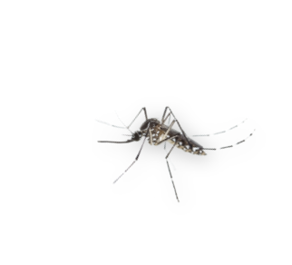
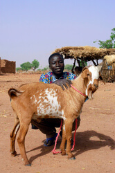
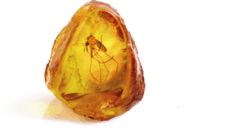
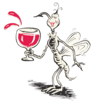

Chikungunya Disease:
Symptoms of chikungunya may be debilitating and last for years. As chikungunya is caused by a virus that is spread by certain mosquitoes, anyone in areas where mosquitoes are common is at risk.
Scroll to Begin
UNITED STATES, 1946
The mosquito repellent DEET was originally developed for the U.S. Army for use in the more insect-infested areas of the world. DEET works by simply blocking certain chemical receptors in the mosquito’s antennae, making it harder for them to “smell” humans.
ST. MARTIN, 2013
After slowly spreading throughout the rest of the world for over half a century, chikungunya disease was first recorded in the Americas on the island of St. Martin in 2013. It has since spread across most tropical regions in North, Central, and South America.
PANAMA CANAL, 1881-1914
The first attempt to build the Panama Canal didn’t go well. Over 22,000 workers died or become hospitalized from mosquito-borne diseases like yellow fever or malaria. Only after stopping construction and embarking on an aggressive, years-long mosquito-eradication mission, was the canal finally completed.
ARGENTINA, 2020
One of the world’s biggest blood sucking mosquitos was spotted by a man in Argentina. How big? The terrifying Psorophora ciliate grows 20 times bigger than your average sized Aedes albopictus mosquitoes that spread chikungunya. And while they do have a nasty bite, luckily, they aren’t known to carry disease or parasites.
What Is Chikungunya?
Chikungunya is a viral disease that is spread by Aedes mosquitoes. Since it was first identified in Tanzania in 1952, it has spread to the tropical regions of the Americas, Africa, and Asia. Its name derives from the African Kimakonde language word “chikungunya”, which means “to become contorted”, and alludes to the painful appearance that those who contract it tend to take. Although deaths from chikungunya are rare, symptoms like severe joint pain and fatigue may be debilitating and last for years.
All it takes is one bite from an infected mosquito to contract chikungunya
Chikungunya: The Basics

The Vector
Chikungunya is carried by the Aedes aegypti and Aedes albopictus mosquitoes.

When They Bite:
Unlike many mosquito species, Aedes primarily bite during the day and are commonly found in urban areas.

Who’s at Risk:
Anyone in areas where mosquitoes are common is at risk of contracting chikungunya.
Chikungunya Symptoms
Chikungunya disease is not just a short-term illness that may ruin your vacation. Many people develop chronic symptoms that can last for months, or even years. These symptoms can be so severe that they may lead to hospitalization. Up to 85% of individuals infected with chikungunya experience severe acute disease that lasts for up to 2 weeks, and up to 60% experience symptoms lasting as long as 6 years after their initial infection.
Short-term Symptoms:
- severe joint pain
- fever
- rash
- fatigue
Long-term Symptoms:
- severe joint pain
- depression
- fatigue
MOROCCO, PRESENT DAY
Buildings in the Moroccan city of Chefchaouen are painted blue. While it is not clear why, one popular theory is that blue keeps mosquitoes away.
SENEGAL, BEFORE 3000 BC
Mosquitoes initially fed only on animals. Genetic data suggest that a preference for human blood began around 5,000–10,000 years ago in western Africa. The change most likely wasn’t made because of how good we Homo sapiens tasted, but more out of necessity, during periods of drought and human urbanization.
CENTRAL AFRICA, PRESENT DAY
Chimpanzees that live in the jungles of central Africa are known to eat a variety of plants that have medicinal properties. One such plant is the mululuza bush (or Vernonia amygdalina) that has been shown to have insecticidal and anti-malarial effects.
Staying Protected
Here’s how to reduce the chances of getting chikungunya. Remember, the best way to protect yourself from chikungunya is to prevent bites from the mosquitoes that carry it. Many chikungunya symptoms are similar to dengue and Zika. The only way to know if you have chikungunya is to get a blood test from your healthcare professional.
- Use insect repellent during the day and at night.
- Wear long pants, and shirts with long sleeves.
- Wear clothes and gear treated with permethrin.
- Use mosquito netting when sleeping outdoors or in rooms exposed to the outdoors.
- Choose accommodations that have screens on all doors and windows.
See Where Outbreaks are Most Common
See Country ListChikungunya by the Numbers
According to the U.S. Centers for Disease Control and Prevention and the World Health Organization, chikungunya is a risk for travelers from the United States.
-
35 million
U.S. travelers travel to countries affected by chikungunya every year.
-
2.6 million
Suspected chikungunya cases were reported in the Americas between 2013 and 2017.
-
4,000+
Chikungunya cases were reported among U.S. travelers between 2014 and 2017.
How is Chikungunya Treated?
While there is no treatment or vaccine, below are some of the ways you can work to reduce the symptoms of chikungunya.
-
Acetaminophen (Tylenol) can help reduce the fever and the pain that comes with a chikungunya infection.
-
Healthcare professionals recommend that people with chikungunya drink plenty of fluids to prevent dehydration.
-
Get lots of rest and let your immune system do its job.
Plan a Visit to Your Healthcare Professional or a Travel Health Clinic Before Your Trip
Schedule a visit at least 1 month before you go, especially if you have a pre-existing health condition. You will be able to discuss where you will be staying, planned activities, and meals. Your healthcare professional will be able to give you advice on any medications you may need and offer other useful ways to help you prepare for your trip, such as providing details about immunizations you may need, minimizing health risks, and what to do if you become ill while overseas.
EGYPT, 450 BC
The Greek writer and historian Herodotus first described how Egyptian fishermen used their fishing nets to protect themselves from mosquitoes at night. The smell must have made at least a few of them consider whether or not it was worth it.
MYANMAR, 100 Million Years Ago
A mosquito discovered in amber has been dated to ~100 million years ago, when dinosaurs still roamed the earth. Unlike most species, they’ve remained largely unchanged for millions of years. The perfect bloodsucker!
TANZANIA, 1952
The first identified chikungunya outbreak was reported in Tanzania. The disease was named after the Kimakonde word “chikungunya”, which means “to become contorted”, alluding to the painful appearance those who contract it tend to take.
MALAYSIA, 1950s
Early use of DDT in Borneo was effective at killing mosquitoes, but there was one small problem: They used too much. DDT seeped into the food chain wiping out entire animal species, including cats. This resulted in an explosion of the rat population. The rats destroyed crops and put people at risk of the plague. The solution? Cats were parachuted in, and soon the rats were under control again.
SHARE YOUR STORY AND HELP RAISE AWARENESS
CHINA, 2018
The Greek writer and historian Herodotus first described how Egyptian fishermen used their fishing nets to protect themselves from mosquitoes at night. The smell must have made at least a few of them consider whether or not it was worth it.
VIETNAM, 1300 - 1600s
The jungles of northern Vietnam helped limit Chinese invasions during the Ming Dynasty. How? While the Chinese troops were prepared for enemy soldiers, they weren’t prepared for mosquitoes. So many Chinese troops were either incapacitated or killed by mosquito-borne illnesses that they were forced to withdraw.
THE PACIFIC, 1940s
The mosquito repellent DEET was originally developed for the U.S. Army for use in the more insect-infested areas of the world. DEET works by simply blocking certain chemical receptors in the mosquito’s antennae, making it harder for them to “smell” humans.
Frequently Asked Questions
Chikungunya and Other Vector-borne Diseases
-
What are vector-borne diseases?
Vector-borne diseases are illnesses transmitted by arthropods, such as mosquitoes, ticks, and fleas. Chikungunya, dengue, malaria, and Zika are examples of vector-borne diseases carried by mosquitoes.
-
What are the symptoms of chikungunya disease?
Many people develop symptoms within a few days of infection. Sometimes, the symptoms can last for years. Read more about the symptoms of chikungunya here.
-
Are there certain factors that increase my risk of contracting chikungunya disease?
The risk is largely related to your exposure to mosquitoes and whether you have prior immunity. Some people, such as infants, older adults, and those with comorbidities (eg. diabetes, hypertension, or heart disease), may have a higher risk.
-
What is the difference between the chikungunya disease and other mosquito-borne diseases?
Chikungunya disease can exhibit very similar symptoms to dengue and Zika infections, which are all transmitted by Aedes mosquitoes. Symptoms of all three include fever, muscle pain, joint pain, rash, and headache.
Chikungunya disease tends to be associated with severe joint pain, but a true diagnosis can only be done by a blood test.
Malaria is transmitted by a different kind of mosquito, the Anopheles mosquito that primarily only bites at night. Rather than a virus, malaria is caused by a parasite. Malaria is associated with fever and chills or “flu-like” symptoms. -
There have never been any outbreaks of chikungunya in the country I’m visiting, do I need to be concerned?
There is a potential risk of chikungunya in any country where Aedes mosquitoes are present. In fact, areas where the local population has no prior exposure to chikungunya virus are vulnerable to outbreaks. For more information, check the “Additional Resources” section, and/or visit a travel health clinic or healthcare professional.
-
If I get chikungunya disease, can I give it to someone else?
No, you cannot easily infect someone with chikungunya. It is only transmitted through the bites of infected Aedes mosquitoes. Some cases of mother-to-child transmission have been documented, but it is rare.
-
What should I do if I think I may have contracted chikungunya?
Contact your healthcare professional for further information.
Chikungunya Prevention
-
Does chikungunya have a vaccine?
No. Currently, the best way to protect yourself from chikungunya is to protect yourself from mosquitoes.
-
What is permethrin?
Permethrin is a chemical that repels and kills mosquitoes. It often comes pre-applied to clothing, boots, and tents, or it can be purchased to be applied separately. Clothing treated with permethrin provides protection even after multiple washings. Check the label of the permethrin product you use for exact instructions, and to see how long the protection will last.
-
How effective is DEET at deterring mosquitoes?
If applied correctly, DEET works well at keeping mosquitoes at bay. Since Aedes mosquitoes primarily bite during the day, it is important to remember to apply during the daytime and not just in the evening. DEET also needs to be reapplied regularly, especially after swimming. Check the label for more detailed instructions.
-
I am going on a cruise. Do I need to worry about chikungunya?
Aedes mosquitoes primarily bite during the day, so they may be out when you are on sightseeing excursions. If your cruise ship is moored close to shore, they will likely not be far away.
Travel Preparation
-
Where can I go for more information about chikungunya?
Please check out the links in our “Additional Resources” section.
-
Do I need to see my healthcare professional or visit a travel health clinic if I am just going away for a long weekend?
Mosquitoes will bite you when they can—whether you’re away for a month or a day! Your healthcare professional can advise you about any mosquito precautions needed based on your destination and itinerary.
-
If there is no chikungunya vaccine, why should I see a healthcare professional?
It’s always good practice to visit your healthcare professional or travel health clinic before you go to a tropical destination to make sure you have all appropriate vaccinations, and to get trusted recommendations on other ways to reduce your risk of contracting diseases.
-
How long before traveling should I see a healthcare professional?
It depends on what vaccines or treatments you need but, generally, it’s a good idea to visit your healthcare professional or travel health clinic at least 3–4 weeks before you travel.
-
How do I find a travel clinic near me?
To travel safely, it is important to be prepared before you go. Find a travel health clinic near you below.
Find a Travel Healthcare Provider
Additional Resources
TravelHealthConnect: TravelResources, Tips & Tools » World Health Organization Chikungunya Fact Sheet »World Health Organization Chikungunya Fact Sheet »Mayo Clinic Chikungunya Information »U.S. CDC Travel Health Notices & Recommendations »World Health Organization Vaccine Info. & Requirements »Emergent BioSolutions
Contact Us
Our Story
As health professionals and world travelers, we’ve always understood the connection between having truly immersive travel experiences and needing to protect your health before you go. Emergent BioSolutions aspires to give travelers peace of mind by producing vaccines to protect against the threats of emerging and existing infectious diseases as they consider their travel health prior to traveling.
Stay Connected
Emergent BioSolutions Inc.
400 Professional Drive, Suite 400
Gaithersburg, MD 20879
240-631-3200
References
- Álvarez-Argüelles ME, at al. Diagnosis and molecular characterization of chikungunya virus infections. In: Current Topics in Neglected Tropical Diseases. 2019
- Breedlove B. Emerg Infect Dis. 2021; 27:676
- Centers for Disease Control and Prevention. Chikungunya virus: Clinical evaluation & disease. https://www.cdc.gov/chikungunya/hc/clinicalevaluation.html. Accessed September 21, 2021
- Centers for Disease Control and Prevention. Chikungunya virus: Geographic distribution. https://www.cdc.gov/chikungunya/geo/index.html. Accessed September 21, 2021
- Centers for Disease Control and Prevention. Chikungunya virus: Prevention. https://www.cdc.gov/chikungunya/prevention/index.html. Accessed September 21, 2021
- Centers for Disease Control and Prevention. Chikungunya virus: Symptoms, diagnosis, & treatment. https://www.cdc.gov/chikungunya/symptoms/index.html. Accessed March 16, 2021
- Centers for Disease Control and Prevention. Climate and health: Diseases carried by vectors. https://www.cdc.gov/climateandhealth/effects/vectors.htm. Accessed September 21, 2021
- Centers for Disease Control and Prevention. Travelers' health: Chikungunya. https://wwwnc.cdc.gov/travel/diseases/chikungunya. Accessed October 10, 2021
- Centers for Disease Control and Prevention. Travelers' health: Travelers' health most frequently asked questions. https://wwwnc.cdc.gov/travel/page/faq. Accessed September 21, 2021
- Centers for Disease Control and Prevention. Travelers' health: Your survival guide to safe and healthy travel. https://wwwnc.cdc.gov/travel/page/survival-guide. Accessed March 16, 2021
- Centers for Disease Control and Prevention Yellow Book. Chapter 2: Preparing international travelers. https://wwwnc.cdc.gov/travel/yellowbook/2020/preparing-international-travelers/the-pretravel-consultation. Accessed September 22, 2021
- Centers for Disease Control and Prevention Yellow Book. Chapter 3: Environmental hazards & other noninfectious health risks. https://wwwnc.cdc.gov/travel/yellowbook/2020/noninfectious-health-risks/mosquitoes-ticks-and-other-arthropods. Accessed September 23, 2021
- Centers for Disease Control and Prevention Yellow Book. Chapter 4: Travel-related infectious diseases. https://wwwnc.cdc.gov/travel/yellowbook/2020/travel-related-infectious-diseases/chikungunya. Accessed October 10, 2021
- Chavasse D. Malawi Med J. 2002;14:7
- Curbed. Skyscrapers dripping in gardens look great — until the mosquitoes swarm. https://archive.curbed.com/2020/9/18/21445069/qiyi-city-forest-garden-mosquitoes-chengdu. Accessed September 22, 2021
- Daily Mail. The mega mosquito! https://www.dailymail.co.uk/news/article-7921207/Argentinian-posts-photo-giant-bug-alongside-regular-sized-insect.html. Accessed 22 September, 2021
- Dambach P, et al. J Med Entomol. 2018;55:1027
- Elsinga J, et al. PLoS Negl Trop Dis. 2017;11:e0005987
- Emergent BioSolutions. Analyst & Investor Day 2019. https://investors.emergentbiosolutions.com/static-files/852f0de4-2e46-451b-8d89-5aba64f17810. Accessed September 28, 2021.
- Farombi EO and Owoeye O. Int J Environ Res Public Health. 2011;8:2533
- Henry M, et al. Rev Panam Salud Publica. 2017; Aug 21;41:e61
- Herodotus. (1996). Herodotus: The Histories. London, Eng.; New York: Penguin Books, by Herodotus (Author), John M. Marincola (Editor, Introduction), Aubrey de Sélincourt (Translator)
- Hossain MS, et al. PLoS Negl Trop Dis. 2018;12:e0006561
- Ileke KD, et al. Int J Trop Dis 2018. doi.org/10.23937/ijtd-2017/1710018
- Insect Week. Mosquitoes and the Panama Canal.
- https://www.insectweek.co.uk/news/mosquitoes-and-panama-canal. Accessed September 22, 2021
- Katz TM, et al. J Am Acad Dermatol. 2008;58(5):865-871. doi:10.1016/j.jaad.2007.10.005
- Institute of Medicine (US) Committee on the Economics of Antimalarial Drugs. Saving lives, buying time: economics of malaria drugs in an age of resistance. Arrow KJ, et al (editors). Washington (DC): National Academies Press (US); 2004.
- Mosquito Magnet. How big can mosquitoes get? https://www.mosquitomagnet.com/articles/how-big-can-mosquitoes-get. Accessed September 9, 2021
- O'Shaughnessy PT. Am J Public Health. 2008; 98:1940
- Paixao ES, et al. Trans R Soc Trap Med Hyg. 2018;112:301
- Pan American Health Organization. Fact sheet: Chikungunya. https://www3.paho.org/hq/index.php?option=com_content&view=article&id=8303:2013-hoja-informativa-chikungunya&Itemid=40023&lang=en. Accessed September 22, 2021
- Pan American Health Organization. Geographic spread of Chikungunya in the Americas: December 2013–December 2017. https://ais.paho.org/phip/viz/ed_chikungunya_amro.asp. Accessed September 23, 2021
- Pan American Health Organization. Guide on preparing for chikungunya virus introduction in the Americas. https://www3.paho.org/hq/index.php?option=com_content&view=article&id=6464:2012-paho-cdc-publish-guide-on-preparing-chikungunya-virus-introduction-americas&Itemid=1926&lang=en. Accessed September 23, 2021
- PennState News. Mosquitoes, malaria and Asian history. https://news.psu.edu/story/340729/2015/01/15/research/mosquitoes-malaria-and-asian-history. Accessed September 24, 2021
- Perry D. The Moroccan town drenched in blue. https://www.bbc.com/travel/article/20161007-moroccos-unlikely-all-blue-city. Accessed October 22, 2021
- Rose NH, et al. Curr Biol. 2020;30:3570
- Schwartz O and Albert ML. Nat Rev Microbiol. 2010;8:491
- Science Daily. Mosquitoes that carry malaria may have been doing so 100 million years ago. https://www.sciencedaily.com/releases/2019/02/190211163959.htm. Accessed September 24, 2021
- van Aalst M, et al. Travel Med Infect Dis. 2017;15:8
- World Health Organization. Fact sheet: Chikungunya. https://www.who.int/news-room/fact-sheets/detail/chikungunya. Accessed September 17, 2021
- World Health Organization. Facts sheet: Malaria. https://www.who.int/news-room/fact-sheets/detail/malaria. Accessed September 22, 2021
- World Health Organization. Facts sheet: Vector-borne diseases. https://www.who.int/news-room/fact-sheets/detail/vector-borne-diseases. Accessed September 22, 2021